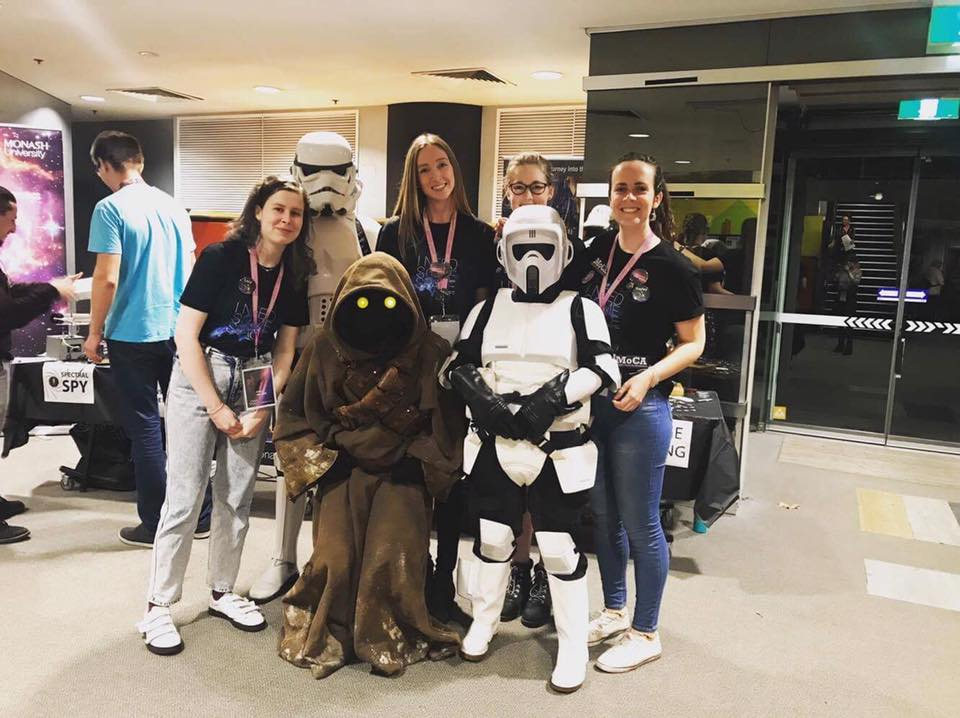
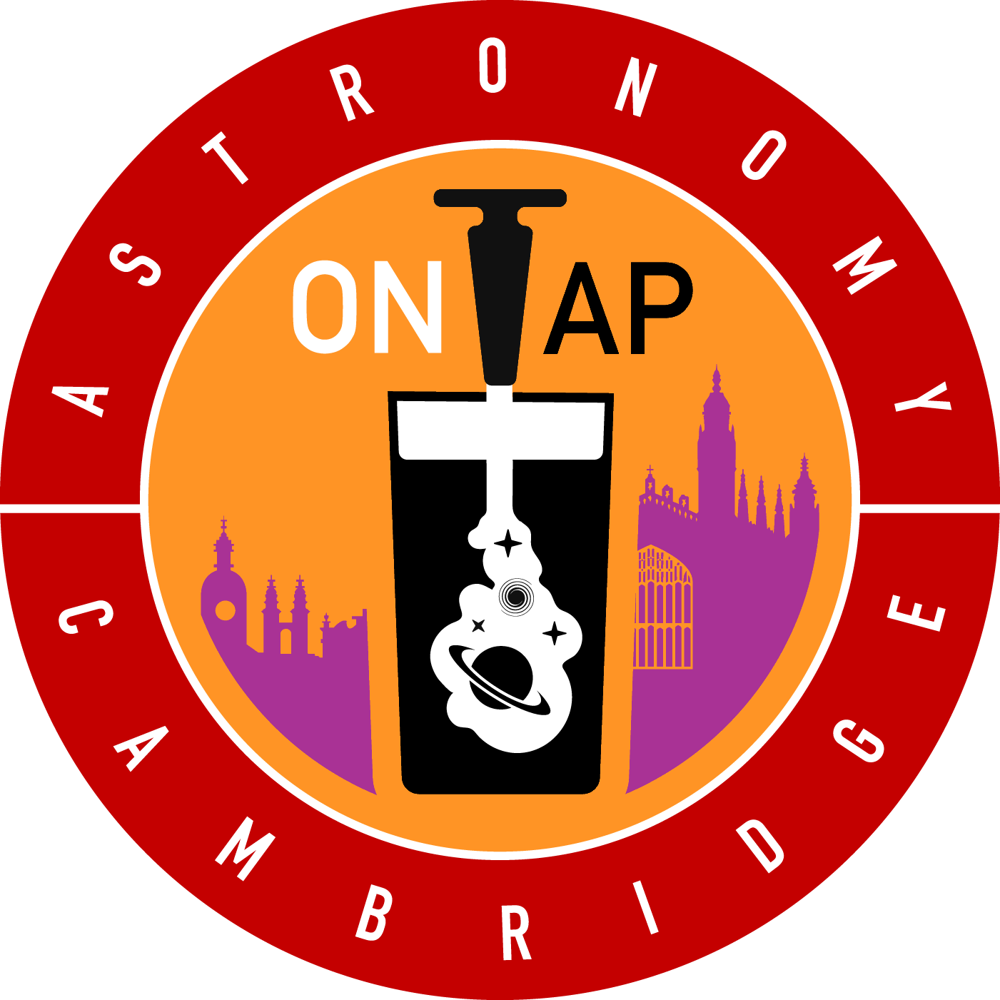
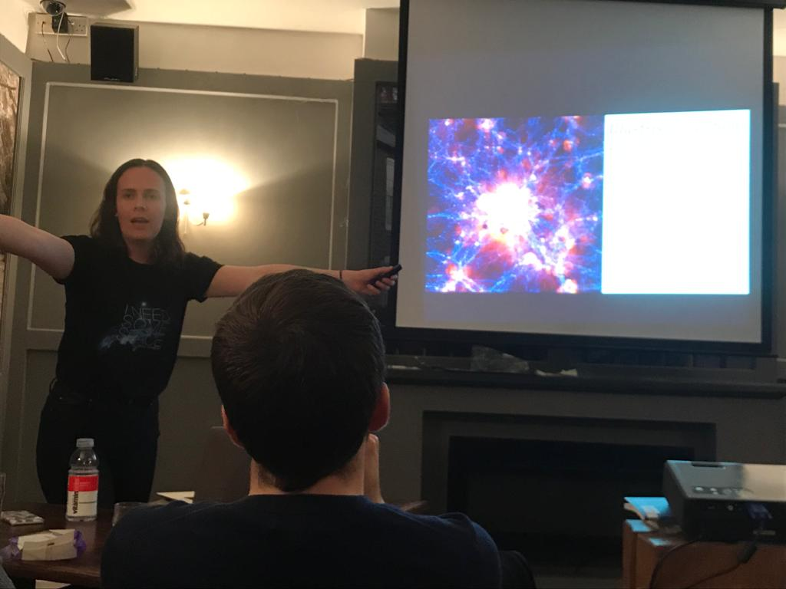

Outreach
 I really enjoy engaging with people and getting them excited about science. I've given a few public talks at the pub, at high schools, and over Skype to a primary school class in New Zealand. I've done live science demonstrations at schools, and at the Astrolight festival in Melbourne, Australia. Check out this YouTube stream I did for kids about gravity and general relativity, and this one about cosmological simulations.
 When I was at Cambridge, I co-organised our local chapter of Astronomy on Tap. We held Astronomy-themed talks once a month in the pub over a beer or two at the Maypole. Due to Covid-19, our in-pub events moved online for a while, check them out on this YouTube channel. Keep an eye on the Facebook and Twitter pages to stay up-to-date on upcoming events.

I'm looking to expand into doing more outreach, since I absolutely love explaining what I do.
If you have anything coming up, or have any suggestions for anyone/anywhere that might be interested in hearing about some cool stuff, please email me!